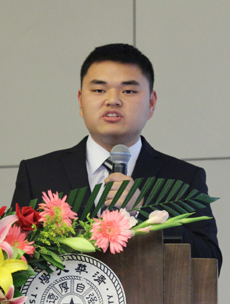

我来自江苏省无锡市，现就读于清华大学建筑学院建筑技术系。一入大学，我就被清华“自强不息、厚德载物”的校训深深鼓舞，立志践行清华“又红又专”的光荣传统。以下我将对自己三年来的成长与收获进行介绍。
1）思想进步，追求奉献
作为一名新生党员，我不断追求思想进步，积极参与党建活动。大一担任建环九班党课小组组长，大二、大三一直担任建环九支部党支书。2011年4月，为了确保支部对北漂“蚁族”调研的顺利进行，我先后4次走访海淀区唐家岭、小月河等“蚁族”聚居地，做了充分的前期准备工作。最终支部调研工作得以顺利完成，并取得了良好效果。以调研成果为基础撰写了报告《唐家岭兴衰记》，调研工作被评为建筑学院特色党建活动，而我本人也被评为建筑学院优秀党支书。
同时，我也积极承担社会工作，为广大同学服务。在班级中作为学习委员，我积极推动团小组履行学习小组职责，促进组内学习互助，加强班级学风建设；在学院科协作为竞赛部干事，我组织挑战杯和SRT的申报评审工作，奉献了自己的汗水，收获了同学们的肯定。
2)全情投入，学业精进
我时刻铭记清华“严谨求实”的优良学风，始终保持勤奋踏实，刻苦钻研的学习态度。学习上的全情投入，使我获得了三年学分绩专业第一的优异成绩。其中2门课程获得满分，40%的课程分数在95分以上，13门课获大班第一，并先后获得综合一等奖学金和国家奖学金，第20届人工环境工程学科奖学金一等奖。同时，我积极参加各类科技活动及学科竞赛，努力拓展自己的科学视野，增进科学素养。大二时，我参加了全国部分地区大学生物理竞赛（非物理类A组）并获得一等奖。此外，我还参加了清华大学数学建模大赛，并作为清华种子队参加了美国数学建模竞赛，最终获得二等奖。
3）行健不息，志愿有我
秉承清华“行健不息”的光荣传统，志愿和实践活动一直是我大学生活中不可分割的重要组成。大二上学期，我坚持每周四到清华同方二期工地为驻地务工人员放映电影，讲解时事，并共同策划组织了建筑工地的中秋联欢活动。在上海无证电焊工引发安全事故的事件受到广泛关注后，我又挤出时间搜集整理相关资料，及时向务工人员介绍职业安全保护知识及维权手段，受到了广大工友的热烈欢迎。当看到有工友晚上睡觉时把探照灯打在自己身上来御寒时，我更加深切地感觉到在享受着最优秀的学习和生活资源的同时，我们应当尽我所能回馈社会，哪怕是为工友提供一副眼罩，真正体现一名清华人“从我做起，从现在做起”的精神。
大一暑假我担任赴辽宁省辽阳县“农村建筑节能调研支队”的队长，对近200户农宅开展访谈调研，实践活动获得建筑学院暑期实践银奖，而我也被评为环保部“千乡万村”大学生志愿者环保科普行动优秀志愿者。从大二开始，我就负责清华大学超低能耗示范楼的志愿讲解工作，迄今已接待高校师生及社会各界上千人次的参观学习。各种实践和志愿活动不仅使我获得了自我锤炼和提升，更让我深刻地认识到作为一个清华人自己所肩负的重要使命和责任。
4）学以致用，勇于创新
本专业所处的人居环境、建筑节能事业与城乡建设、人民生活等息息相关，这也为我利用专业知识解决实际问题、积极开展创新提供了广阔舞台。大二暑假，我参加了“爱立信”杯热创新设计大赛，针对高密度数据机房的散热问题，我们设计了“倒T型平板热管的低碳散热方案”因其独创性先声夺人，获得硬件组冠军并顺利入围决赛。作为入围决赛的十支队伍中唯一的本科生队伍（其余全是研究生），我带领团队不畏强手、顽强拼搏，成功展示了我们的创新性成果，并最终夺得第四届“爱立信”杯热创新设计大赛全国总冠军。
大三时，恰逢故宫博物院邀请我们专业为其重要文物保存地——倦勤斋提供空调系统解决方案，故宫夜晚断电使得文物保护地的常规空调方案无法工作，也就无法保障室内的温湿度环境，很多珍贵文物已经出现霉斑。于是老师广发“英雄帖”，不论本科生还是研究生均可提交自己的方案并择优选用。甫一接手这个光荣的任务，我就意识到责任的重要性和时间的紧迫性。在整整一学期的工作中，我带领团队同学与时间赛跑。从方案设计、数值模拟、可行性论证再到样机制作，我们马不停蹄，总觉得稍一懈怠就会有珍贵文物受损。期间，我们实地测试了目标建筑的各项特性，废寝忘食地设计系统形式，为了赶制样机我们甚至连假期都在机械加工间中度过。最终，我们创新性地设计出“交流电—蓄电池联合驱动的应急空调方案”，成功解决了这类特殊场合的空调保障难题，获得故宫博物院和世界建筑文物保护基金会（WMF）专家的一致认可，即将应用于倦勤斋的文物保存中。以这一设计为基础，我带领团队同学从全国60余支院校代表队中脱颖而出，，荣获第六届中国制冷空调行业大学生科技竞赛一等奖第一名。
大四，我参加了由英国皇家特许建造学会主办的绿色建筑创意全国邀请赛并入围全国四强。此外，我还先后入选“清华大学——‘东芝’新能源与未来城市兴趣团队”和“星火计划”。经过这一系列科学研究和科技创新活动的磨砺，我深深感受到了作为“暖通人”的自豪，同时也深谙重任在肩，坚定了自己走出一条更广阔科研道路的决心。
5）心系冷暖，执着追梦
随着专业知识的不断深入和拓展，我越发认识到建筑环境工程专业的重要意义。本专业所处的建筑节能事业涉及建筑、能源、环境等多个领域，与国家建设、人民生活及工业生产等息息相关，而建环所严谨求实的科研氛围深深感染了我，为我照亮了通往梦想的道路。经过慎重考虑，我选择了建环所攻读直博，导师是江亿院士，决心投身于日益蓬勃发展的城乡建设和节能减排的伟大事业，继续实践清华人“又红又专”的光荣传统。只有扎根中国这片土地，立足中国解决实际问题，才能实现我们建环人“心系天下冷暖，情牵广厦万千”的赤诚梦想。
最后我要特别感谢我所在的建环9班，我们是一个团结向上、温馨和谐的集体，没有他们的关心支持就没有今天我所取得的成绩。放眼未来，我将更加努力学习和工作，力争为我国的建筑节能事业、为营造适宜的人居环境贡献自己的一份力量。